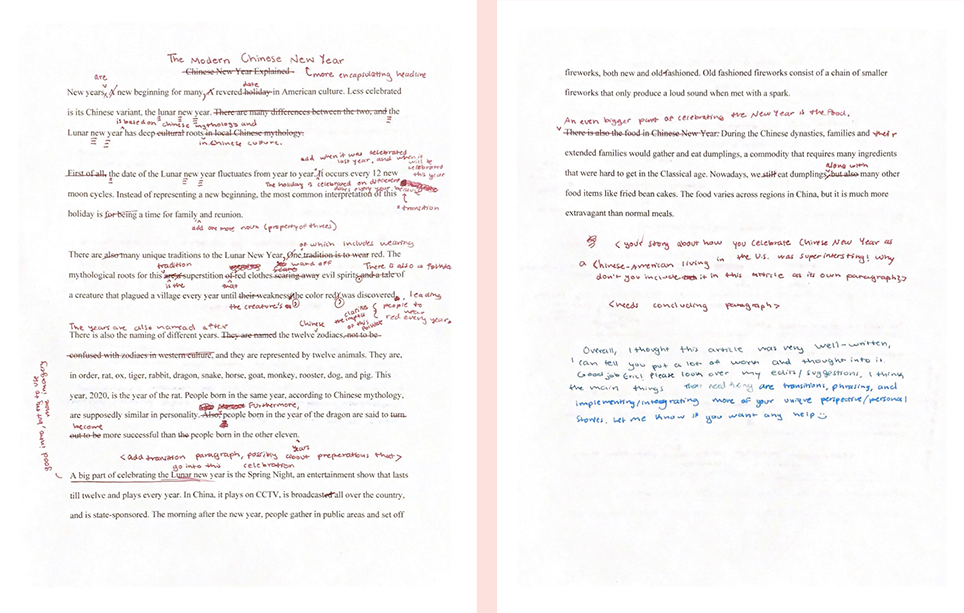

Team Leader
As a team leader during the 2019-2020 school year, along with writing for the online and print publications of tjTODAY, I led a team of student journalists. During our weekly meetings, I would edit and advise the staffers' articles or help the staffers brainstorm ideas.
Anecdote
As a team leader for tjTODAY, my school newspaper, I led a group of student journalists. One student, Eric, did not like to write and had joined the journalism class accidentally. His disinterest prompted him to study for his Chinese class during journalism. One day, I decided to sit with him and understand why Chinese interests him. Opening his textbook to a page translating to “Chinese New Year”, we read about the traditional “old-fashioned” fireworks and fried bean cakes. He compared the textbook to his own anecdotes, sharing his experience celebrating Chinese New Year as a Chinese-American. His dad works in China, so while some things remained traditional, his family called using “WeChat” and watched reruns of the Lunar New Year show “Spring Night”. This is not uncommon among some of his friends celebrating the festival in America as well, he said. The experience he shared and the way in which it was conveyed could not have been equivalently expressed in the textbook. This is especially because curriculums cannot always keep up with the changing world, and, therefore, do not always represent all experiences–yet these perspectives are just as important to learn about to get a true grasp of Chinese culture. The purpose of journalism is to give others a better understanding of the world, and in guiding him to write an article about “Chinese New Year”, I helped him do just that. Through discovering this value of the disliked activity to society in adding needed perspectives to the world and to himself in giving him a space to express his thoughts, he slowly found himself liking journalism–and even joined the class again the next year.
Click here to read the final article
Special Projects
I also often had the staff members help me with special projects to gain exposure in multimedia works. For example, for our 2019 December print photo issue, I tasked each of them with a photo to write a caption for, teaching them along the way how to take immersing photos and write descriptive captions.
Click here to view the document where the staffers wrote their captions.